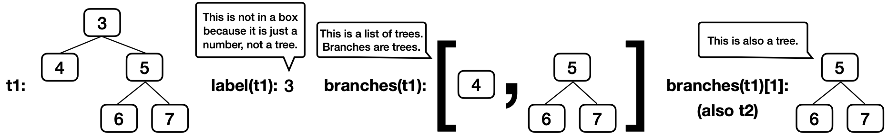

DeNero Discussion 5: Trees, Data Abstraction
Getting Started
Everyone go around and say your name, just in case someone forgot.
Think of a big word with at least three syllables, such as "solitary" or "conundrum" or "ominous". Write it down privately so that you can show everyone at the end. Try to use it as many times as you can during today's discussion, but in ways that don't give away that it's your big word. At the end, your group will try to guess each person's big word. Whoever uses their big word the most times (and at least twice) without their group guessing it wins. (You win nothing; it's just a game.)
Someone from your group should join Discord.
To get help from a TA, send a message to the discuss-queue channel with
the @discuss tag and your discussion group number.
If you have only 1 or 2 people in your group, you can join the other group in the room with you.
The most common suggestion from last discussion was to add some hints, so we have. The second most common suggestion was to encourage more discussion and collaboration. Discuss and collaborate!
Trees
For a tree t:
- Its root label can be any value, and
label(t)returns it. - Its branches are trees, and
branches(t)returns a list of branches. - An identical tree can be constructed with
tree(label(t), branches(t)). - You can call functions that take trees as arguments, such as
is_leaf(t). - That's how you work with trees. No
t == xort[0]orx in torlist(t), etc. - There's no way to change a tree (that doesn't violate an abstraction barrier).
Here's an example tree t1, for which its branch branches(t1)[1] is t2.
t2 = tree(5, [tree(6), tree(7)])
t1 = tree(3, [tree(4), t2])
A path is a sequence of trees in which each is the parent of the next.
You don't need to know how tree, label, and branches are implemented in
order to use them correctly, but here is the implementation from lecture.
def tree(label, branches=[]):
for branch in branches:
assert is_tree(branch), 'branches must be trees'
return [label] + list(branches)
def label(tree):
return tree[0]
def branches(tree):
return tree[1:]
def is_leaf(tree):
return not branches(tree)
def is_tree(tree):
if type(tree) != list or len(tree) < 1:
return False
for branch in branches(tree):
if not is_tree(branch):
return False
return TrueQ1: Warm Up
What does this expression evaluate to?
label(min(branches(max([t1, t2], key=label)), key=label))Solution
6: max([t1, t2], key=label) evaluates to the t2 tree because its label 5 is
larger than t1's label 3. Among t2's branches (which are leaves), the left one
labeled 6 has a smaller label.
How convoluted! (That's a big word.) Talk about it with your group. When you all agree, post your answer to your group's Discord channel's text chat.
If no one in your group knows how key functions work with max and min,
here's a quick refresher.
max(s, key=f) returns the item x in s for which f(x) is largest.
>>> s = [-3, -5, -4, -1, -2]
>>> max(s)
-1
>>> max(s, key=abs)
-5
>>> max([abs(x) for x in s])
5Therefore, max([t1, t2], key=label) returns the tree with the largest label,
in this case t2.
In case you're wondering, this expression does not violate an abstraction
barrier. [t1, t2] and branches(t) are both lists (not trees), and so it's
fine to call min and max on them.
Q2: Has Path
Implement has_path, which takes a tree t and a list p. It returns whether
there is a path from the root of t with labels p. For example, t1 has a
path from its root with labels [3, 5, 6] but not [3, 4, 6] or [5, 6].
Important: Before trying to implement this function, discuss these questions from lecture about the recursive call of a tree processing function:
- What recursive calls will you make?
- What type of values do they return?
- What do the possible return values mean?
- How can you use those return values to complete your implementation?
If you get stuck, you can view our answers to these questions by clicking the hint button below, but please don't do that until your whole group agrees.
As you usual, you will call has_path on each branch b. You'll make this
call after comparing p[0] to label(t), and so the second argument to
has_path will be the rest of p: has_path(b, p[1:]).
What type of values do they return?
has_path always returns a bool value: True or False.
What do the possible return values mean?
If has_path(b, p[1:]) returns True, then there is a path through branch b
for which p[1:] are the node labels.
How can you use those return values to complete your implementation?
If you have already checked that label(t) is equal to p[0], then a True
return value means there is a path through t with labels p using that branch
b. A False value means there is no path through that branch, but there
might be path through a different branch.
def has_path(t, p):
"""Return whether tree t has a path from the root with labels p.
>>> t2 = tree(5, [tree(6), tree(7)])
>>> t1 = tree(3, [tree(4), t2])
>>> has_path(t1, [5, 6]) # This path is not from the root of t1
False
>>> has_path(t2, [5, 6]) # This path is from the root of t2
True
>>> has_path(t1, [3, 5]) # This path does not go to a leaf, but that's ok
True
>>> has_path(t1, [3, 5, 6]) # This path goes to a leaf
True
>>> has_path(t1, [3, 4, 5, 6]) # There is no path with these labels
False
"""
if p == [label(t)]:
return True
elif label(t) != p[0]:
return False
else:
for b in branches(t):
if has_path(b, p[1:]):
return True
return False
The base case expression p == [label(t)] checks two things: that p has one item and that the item is equal to label(t). Longer expressions (that don't fit the template) would also work, such as if len(p) == 1 and p[0] == label(t).
The recursive case expresses that if a path through some branch b is labeled
p[1:], then there is a path through t labeled p.
If your group needs some guidance, you can click on the hints below, but please talk with your group first before reading the hints.
p is a list of length one with the
label of t as its only element. The second base case should check if the
first element of p matches the label of t.
p[0] is equal to label(t), and so all that's left to check is that p[1:]
contains the labels in a path through one of the branches.
for ____:
if ____:
return True
return FalseYour group is always welcome to ask for help in the #discuss-queue channel.
Q3: Find Path
Implement find_path, which takes a tree t with unique labels and a value
x. It returns a list containing the labels of the nodes along a path from the
root of t to a node labeled x.
If x is not a label in t, return None. Assume that the labels of t are unique.
First talk through how to make and use the recursive call. (Try it yourselves; don't just click the hint button. That's how you learn.)
find_path(b, x) on each branch b.
What type of values do they return?
Each recursive call will either return None or a non-empty list of node labels.
What do the possible return values mean?
If find_path(b, x) returns None, then x does not appear in b. If
find_path(b, x) returns a list, then it contains the node labels for a path
through b that ends with the node labeled x.
How can you use those return values to complete your implementation?
If a list is returned, then it contains all of the labels in the path except
label(t), which must be placed at the front.
def find_path(t, x):
"""
>>> t2 = tree(5, [tree(6), tree(7)])
>>> t1 = tree(3, [tree(4), t2])
>>> find_path(t1, 5)
[3, 5]
>>> find_path(t1, 4)
[3, 4]
>>> find_path(t1, 6)
[3, 5, 6]
>>> find_path(t2, 6)
[5, 6]
>>> print(find_path(t1, 2))
None
"""
if label(t) == x:
return [label(t)]
for b in branches(t):
path = find_path(b, x)
if path:
return [label(t)] + path
return None[label(t)] creates a one-element list of the labels along a path that starts at the root of t and also ends there, since the root is labeled x.
The assignment path = find_path(b, x) allows the return value of this recursive call to be used twice: once to check if it's None (which is a false value) and again to build a longer list.
The expression [label(t)] + path for a tree t and list path creates a longer list that starts with the label of t and continues with the elements of path.
Please don't view the hints until you've discussed with your group and can't make progress.
x is the label of t, then return a list with one element that contains the label of t.
path to the result of a
recursive call to find_path(b, x) so that you can both check whether it's
None and extend it if it's a list.
For a list path and a value v, the expression [v] + path creates a longer
list that starts with v and then has the elements of path.
Description Time! When your group has completed this question, it's time to
describe why this function does not have a base case that uses is_leaf. Come
up with an explanation as a group, pick someone to present your answer, and then
send a message to the discuss-queue channel with the @discuss tag, your
discussion group number, and the message "Found it!" and a member of the course
staff will join your voice channel to hear your description and give feedback.
Challenge Question
If you have time, work on this more challenging tree processing problem as a group. When there's only 5 minutes left, skip ahead to the Document the Occasion section.
The print_tree function from the lecture videos (used in the doctests below)
prints all of the labels of a tree.
>>> print_tree(t1)
3
4
5
6
7def print_tree(t, indent=0):
"""Print a representation of this tree in which
each label is indented by two spaces times its
depth from the root.
>>> print_tree(tree(1))
1
>>> print_tree(tree(1, [tree(2)]))
1
2
>>> print_tree(fib_tree(4))
3
1
0
1
2
1
1
0
1
"""
print(' ' * indent + str(label(t)))
for b in branches(t):
print_tree(b, indent + 1)
def fib_tree(n):
"""Construct a Fibonacci tree.
>>> fib_tree(5)
[5, [2, [1], [1, [0], [1]]], [3, [1, [0], [1]], [2, [1], [1, [0], [1]]]]]
"""
if n == 0 or n == 1:
return tree(n)
else:
left = fib_tree(n-2)
right = fib_tree(n-1)
fib_n = label(left) + label(right)
return tree(fib_n, [left, right])Q4: Make Path
Implement make_path, which takes a tree t with unique labels and a list p
that starts with the root label of t. It returns the tree u with the fewest
nodes for which has_path(u, p) returns True and has_path(u, q) returns
True for all lists q for which has_path(t, q) returns True.
(That is, u has all the paths of t as well as a path with labels p.)
Each node in u that does not correspond to a node in t should be placed last
in its parent's list of branches. Assume that the labels of t are unique.
If has_path(t, p), then make_path(t, p) should return a tree identical (in
structure and labels) to t.
def make_path(t, p):
"""Return a tree with all of the nodes of t and a path with labels p.
>>> t2 = tree(5, [tree(6), tree(7)])
>>> t1 = tree(3, [tree(4), t2])
>>> make_path(t1, [3, 5, 7]) == t1
True
>>> print_tree(make_path(t1, [3, 8, 9, 1]))
3
4
5
6
7
8
9
1
>>> print_tree(make_path(t1, [3, 4, 8, 9]))
3
4
8
9
5
6
7
>>> print_tree(make_path(tree(2, [tree(1), t1]), [2, 3, 5, 6, 8]))
2
1
3
4
5
6
8
7
"""
assert p[0] == label(t), 'It is not possible to make this path'
if len(p) == 1:
return t
new_branches = []
found_p1 = False
for b in branches(t):
if label(b) == p[1]:
new_branches.append(make_path(b, p[1:]))
found_p1 = True
else:
new_branches.append(b)
if not found_p1:
new_branches.append(make_path(tree(p[1]), p[1:]))
return tree(label(t), new_branches)
Because of the assert, the base case condition len(p) == 1 is enough to confirm that p == [label(t)]. In this case, there are no additional nodes needed to ensure that a path labeled p is in t.
To minimize the number of nodes added to the tree, first we look for a branch that can be extended. The name found_p1 will determine whether to add an additional branch to new_branches that does not correspond to a branch in branches(t). Updating it to True when a branch is found with label(b) == p[1] ensures that the path is added only to this branch.
What recursive calls will you make?
make_path(b, p[1:]) can only be called on a b whose label is p[1]. You
either find such a branch or make one with tree(p[1]).
What type of values do they return?
The recursive call returns a tree that contains a path with labels p[1:].
What do the possible return values mean?
This return value is a branch of the tree returned by make_path(t, p).
How can you use those return values to complete your implementation?
Place the return value in the list of new_branches.
Since you've already asserted that p[0] == label(t), if p has length 1 then
t contains a path with labels p, so you can just return t.
If p[1] is a label of a branch, then a path should be made
through that branch. Otherwise, a new branch must be made.
Search through each branch to find one whose label is p[1], then append the
result of a recursive call on that branch to new_branches.
In the case that no branch has label p[1], create a new branch with
tree(p[1]), use make_path to build the rest of the branch, and append that
result to new_branches.
Document the Occasion
For each person, the rest of the group should try to guess their big word (from the Getting Started section). The group only gets one guess. After they guess, reveal your big word and how many times you used it during discussion. Post the winning word (the one that was not guessed but used the most times) in your group's channel's text chat.
Please all fill out the attendance form (one submission per person per week).